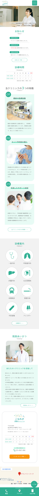

- 制作時間・時期
- 企画・ワイヤーフレーム / 1週間 デザイン / 5日間 コーディング /10日間 2024年8月に制作。
- 使用ツール
- Illustrator / Photoshop

内科病院のWebサイトを自主制作しました。
ユーザーが必要な情報をすっきりとまとめ、急いでいる時でも見やすいレイアウト、配色に仕上げています。
内科病院のWebサイトを自主制作しました。
ユーザーが必要な情報をすっきりとまとめ、急いでいる時でも見やすいレイアウト、配色に仕上げています。
- 制作時間・時期
- 企画・ワイヤーフレーム / 1週間 デザイン / 5日間 コーディング /10日間 2024年8月に制作。
- 使用ツール
- Illustrator / Photoshop
- 案件概要
- 南町田駅にある、地域に根差した小さなクリニック。
- ターゲット
- 小さなお子様からご年配の地域の方々。
- クライアントの
課題、要望 -
①既存のサイトが古く見づらいためか、電話での問い合わせが多く、対応が大変。
②サイトのリニューアルと同時にスマートフォンでの閲覧も最適化させたい。
③病院らしい清潔感あふれる雰囲気にしたい。 - 目的
-
①web予約システムを導入し、電話対応の人的負担を削減する。
②レスポンシブ対応もされた、スマートフォンからでもすっきり見やすいサイトにする。
③清潔感、誠実さを与えられる配色にして、来院の決め手となるサイトにする。 - 情報設計
- ユーザーが特に気にする診療時間や休診情報をファーストビューに配置し、訪問直後に必要な情報がすぐ目に入るように設計しました。診察予約を目的とした訪問者に向け、予約ボタンは視認性の高いオレンジを使用し、サイト上部に固定配置。誰でも迷わず予約ページにたどり着けるよう導線を整えています。ユーザーの主な目的を「診察予約」「診療時間の確認」「場所の確認」「その他情報の確認」の4つに分類し、重要度の高い情報を上部に集約。さらに、受付スタッフの笑顔や診療風景といった明るめな雰囲気の写真を使用することで、安心感や信頼感を視覚的にも伝えられるよう意識しました。ユーザーがストレスなく目的を達成できるよう、導線設計と情報の見せ方に配慮しています。
- デザイン
- 来院に不安を感じやすい初診患者にも安心してもらえるよう、温かさと親しみやすさを感じられるデザインを目指しました。そのために、丸みのあるシェイプや角丸の画像を用いて視覚的な柔らかさを表現。さらに見出しには丸ゴシック体を採用し、優しく温かみのある印象を強調しています。配色にはホワイトとエメラルドグリーンを使用し、清潔感や誠実さを印象づけつつ、視認性にも配慮。加えて、診療科目ごとに対応したアイコンを並列表示することで、どの診療内容かを一目で判断でき、目的の診療科目を探すストレスを軽減しています。利用者が安心して情報を探せるよう、心理的ハードルを下げながら、親しみやすさと機能性の両立を図ったデザインを意識しました。

ALL WORKS
制作したもの一覧
ALL WORKS
制作したもの一覧
-
web site

宵 / 照明専門店
( direction / design / coding ) -
web site

My Portfolio / 当サイト
( direction / design / coding ) -
web site

Rosalie / フラワーショップ
( direction / design / coding ) -
web site
こもれび内科クリニック / 病院
( direction / design / coding ) -
web site

好食冰 / 台湾かき氷店
( direction / design / coding ) -
banner
販促バナー / チョコレート
( design ) -
banner

販促バナー / シャンプー
( design ) -
banner

婚活アプリバナー
( direction / design )